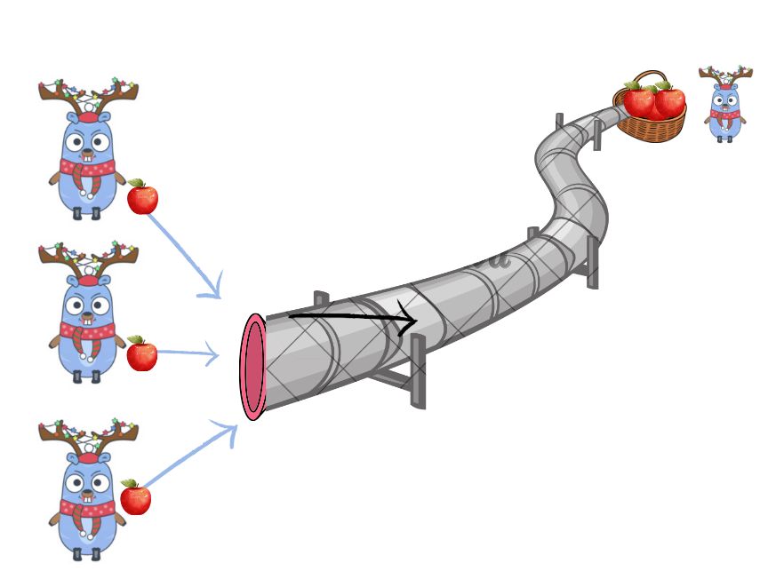

有时候批量积攒一批数据集中处理，是一个高效的提高程序性能的方法，比如我们可以批量写入数据库，批量发送消息到kafka，批量写入网络数据等等。
批量把数据收集出来，我们常用channel类型，此时channel的功能就是一个buffer,多个生产者把数据写入到channel中，消费者从channel中读取数据，但是Go的channel并没有提供批量读取的方法，我们需要自己实现一个。

ithub.com/smallnest/exp/chanx 库
当然我已经实现了一个batch库，你可以直接拿来用，本文主要介绍它的功能、使用方法以及设计原理和考量：github.com/smallnest/exp/chanx。
我们可以使用这个库的Batch方法来批量读取数据，它的定义如下：
1
| func Batch[T any](ctx context.Context, ch <-chan T, batchSize int, fn func([]T))
|
- 第一个参数是
Context,可以让调用者主动取消或者超时控制
- 第二个参数是channel，我们从这个channel中读取数据。channel可以在外部被关闭
- 第三个参数是批处理的大小，也就是我们从channel中读取一批数据的最大量
- 第四个参数是一个函数，我们把从channel中读取的一批数据传递给这个函数，由这个函数来处理这批数据
举一个例子：
1 2 3 4 5 6 7 8 9 10 11 12 13 14 15 16 17
| func TestBatch(t *testing.T) { ch := make(chan int, 10) for i := 0; i < 10; i++ { ch <- i } count := 0 go Batch[int](context.Background(), ch, 5, func(batch []int) { if len(batch) != 5 { assert.Fail(t, "expected batch size 5, got %d", len(batch)) } count += len(batch) }) time.Sleep(time.Second) close(ch) assert.Equal(t, 10, count) }
|
这个例子一开始我们把10个数据写入到一个channel中，然后我们从channel中批量读取，每次读取5个，然后把这5个数据传递给一个函数来处理，我们可以看到，我们读取了两次，每次读取5个，总共读取了10个数据。
我们还可以使用FlatBatch方法来批量读取批量数据，它的定义如下：
1
| func FlatBatch[T any](ctx context.Context, ch <-chan []T, batchSize int, fn func([]T))
|
这个函数和Batch类似，只不过它的channel中的数据是一个切片，每次从channel中读取到一个切片后，把这个切片中的数据展开放入到一批数据中，最后再传递给处理函数。所以它有Flat和Batch两个功能。
举一个例子：
1 2 3 4 5 6 7 8 9 10 11 12 13 14 15
| func TestFlatBatch(t *testing.T) { ch := make(chan []int, 10) for i := 0; i < 10; i++ { ch <- []int{i, i} } count := 0 go FlatBatch[int](context.Background(), ch, 5, func(batch []int) { assert.NotEmpty(t, batch) count += len(batch) }) time.Sleep(time.Second) close(ch) assert.Equal(t, 20, count) }
|
在这个例子中，我们把10个切片写入到channel中，每个切片中有两个元素，然后我们从channel中批量读取并展开，放入到一个batch中，如果batch中的数据大于或等于5个，就把这5个数据传递给一个函数来处理，我们可以看到，我们读取了两次，每次读取5个，总共读取了10个数据。
实现原理和考量
想要从channel中批量读取数据，我们需要考虑以下几个问题：
- 我们需要设定一个批处理的大小，不能无限制的读取而不处理，否则会把消费者饿死，内存也会爆表
- 从channel中读取数据的时候，如果channel中没有数据，我们需要等待，直到channel中有数据，或者channel被关闭。
- 不能无限制的等待，或者长时间的等待，否则消费者会饥饿，而且时延太长业务不允许
我先举一个简单但是不太好的实现方式，我们在它的基础上做优化：
1 2 3 4 5 6 7 8 9 10 11 12 13 14 15 16 17 18 19 20 21 22 23
| func Batch[T any](ctx context.Context, ch <-chan T, batchSize int, fn func([]T)) { var batch = make([]T, 0, batchSize) for { select { case <-ctx.Done(): if len(batch) > 0 { fn(batch) } return case v, ok := <-ch: if !ok { fn(batch) return } batch = append(batch, v) if len(batch) == batchSize { fn(batch) batch = make([]T, 0, batchSize) } } } }
|
这个实现中我们使用了一个batch变量来保存从channel中读取的数据，当batch中的数据量达到batchSize时，我们就把这个batch传递给处理函数，然后清空batch，继续读取数据。
这个实现的一个最大的问题就是，如果channel中没有数据，并且当前batch的数量还未达到预期， 我们就会一直等待，直到channel中有数据，或者channel被关闭，这样会导致消费者饥饿。
我们可以使用select语句来解决这个问题，我们可以在select语句中加入一个default分支，当channel中没有数据的时候，就会执行default分支以便在channel中没有数据的时候，我们能够把已读取到的数据也能交给函数fn去处理。
1 2 3 4 5 6 7 8 9 10 11 12 13 14 15 16 17 18 19 20 21 22 23 24 25 26 27 28
| func Batch[T any](ctx context.Context, ch <-chan T, batchSize int, fn func([]T)) { var batch = make([]T, 0, batchSize) for { select { case <-ctx.Done(): if len(batch) > 0 { fn(batch) } return case v, ok := <-ch: if !ok { fn(batch) return } batch = append(batch, v) if len(batch) == batchSize { fn(batch) batch = make([]T, 0, batchSize) } default: if len(batch) > 0 { fn(batch) batch = make([]T, 0, batchSize) } } } }
|
这个实现貌似解决了消费者饥饿的问题，但是也会带来一个新的问题，如果channel中总是没有数据，那么我们总是落入default分支中，导致CPU空转，这个goroutine可能导致CPU占用100%, 这样也不行。
有些人会使用time.After来解决这个问题，我们可以在select语句中加入一个time.After分支，当channel中没有数据的时候，就会执行time.After分支，这样我们就可以在channel中没有数据的时候，等待一段时间，如果还是没有数据，就把已读取到的数据也能交给函数fn去处理。
1 2 3 4 5 6 7 8 9 10 11 12 13 14 15 16 17 18 19 20 21 22 23 24 25 26 27 28
| func Batch[T any](ctx context.Context, ch <-chan T, batchSize int, fn func([]T)) { var batch = make([]T, 0, batchSize) for { select { case <-ctx.Done(): if len(batch) > 0 { fn(batch) } return case v, ok := <-ch: if !ok { fn(batch) return } batch = append(batch, v) if len(batch) == batchSize { fn(batch) batch = make([]T, 0, batchSize) } case <-time.After(100 * time.Millisecond): if len(batch) > 0 { fn(batch) batch = make([]T, 0, batchSize) } } } }
|
这样貌似解决了CPU空转的问题，如果你测试这个实现，生产者在生产数据很慢的时候，程序的CPU的确不会占用100%。
但是正如有经验的Gopher意识到的那样，这个实现还是有问题的，如果生产者生产数据的速度很快，而消费者处理数据的速度很慢，那么我们就会产生大量的Timer,这些Timer不能及时的被回收，可能导致大量的内存占用，而且如果有大量的Timer,也会导致Go运行时处理Timer的性能。
这里我提出一个新的解决办法，在这个库中实现了，我们不应该使用time.After，因为time.After既带来了性能的问题，还可能导致它在休眠的时候不能及时读取channel中的数据，导致业务时延增加。
最终的实现如下：
1 2 3 4 5 6 7 8 9 10 11 12 13 14 15 16 17 18 19 20 21 22 23 24 25 26 27 28 29 30 31 32 33 34 35 36 37 38 39 40 41 42 43 44
| func Batch[T any](ctx context.Context, ch <-chan T, batchSize int, fn func([]T)) { var batch = make([]T, 0, batchSize) for { select { case <-ctx.Done(): if len(batch) > 0 { fn(batch) } return case v, ok := <-ch: if !ok { fn(batch) return } batch = append(batch, v) if len(batch) == batchSize { fn(batch) batch = make([]T, 0, batchSize) } default: if len(batch) > 0 { fn(batch) batch = make([]T, 0, batchSize) } else { select { case <-ctx.Done(): if len(batch) > 0 { fn(batch) } return case v, ok := <-ch: if !ok { return } batch = append(batch, v) } } } } }
|
这个实现的巧妙之处在于default出来。
如果代码运行落入到default分支，说明当前channel中没有数据可读。那么它会检查当前的batch中是否有数据，如果有，就把这个batch传递给处理函数，然后清空batch，继续读取数据。这样已读取的数据能够及时得到处理。
如果当前的batch中没有数据，那么它会再次进入select语句，等待channel中有数据，或者channel被关闭，或者ctx被取消。如果channel中没有数据，那么它会被阻塞，直到channel中有数据，或者channel被关闭，或者ctx被取消。这样就能够及时的读取channel中的数据，而不会导致CPU空转。
通过在default分支中的特殊处理，我们就可以低时延高效的从channel中批量读取数据了。